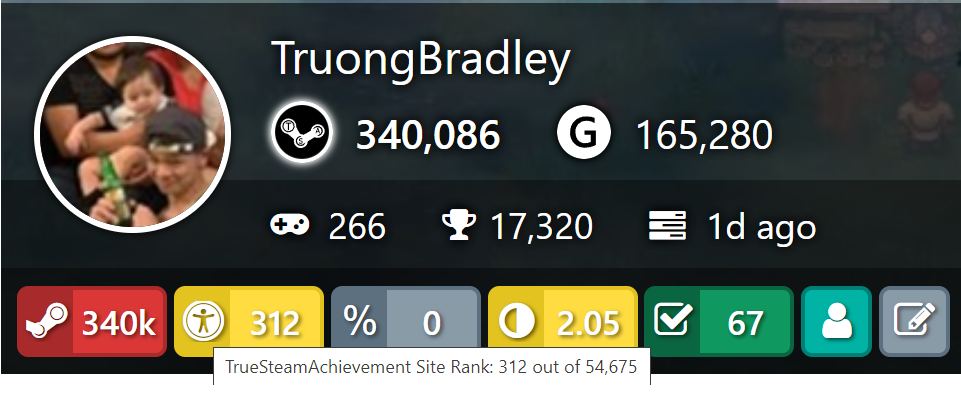

Intro
Hello! Welcome to my webpage and soon-to-be website!
My name is Bradley Loc Truong. Brad, B-rad, Bradley, it's all the same to me. I'm currently in the field of Training Management as a Technical Sergeant in the United States Air Force. I've been in service since 2014. I'm currently stationed at Seymour Johnson Air Force Base. Before that, I was stationed in New Jersey and Delaware. I'm majoring in Computer Science. I have around 24 credit hours left on my degree.
Hobbies
One of my many personal hobbies involves anything related to cars. This includes looking at, fixing, and driving them. One of my toxic traits is using my free time to browse cars beyond my financial reach. One of my favorite websites for this activity is cargurus.com. This website allows you to set many filters such as model, price, and distance from you. This is my prized car, Verona. Yes, I am one of those people who names their cars lol.

Another hobby of mine is woodworking. I often get many of my ideas from sites such as pinterest.com.
The final, but certainly not last, hobby of mine is playing video games. I almost exclusively game on steam.com. The most gratifying part of gaming is earning achievements. I'm currently ranked #312 out of 54,189 registered gamers for most achievements. Here is a snapshot if you think I'm bluffing about my trivial life achievement.

Feel free to check out my ranking live on truesteamachievements.com